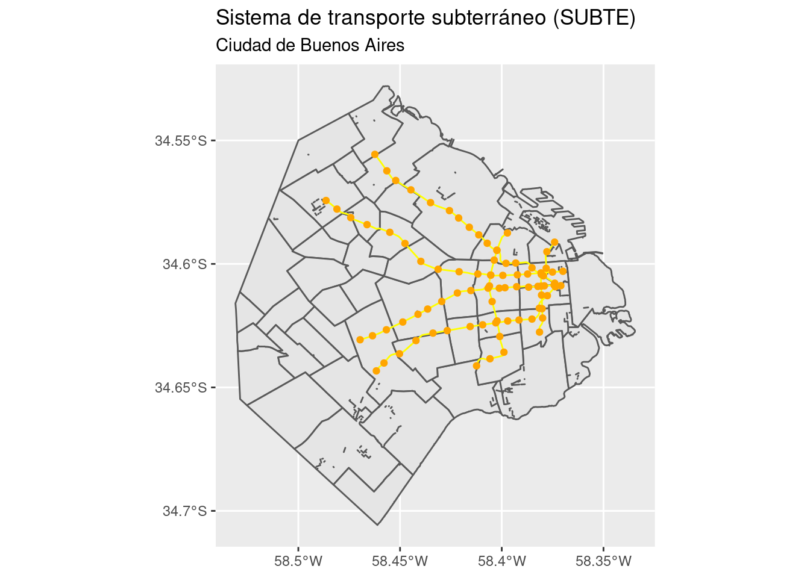
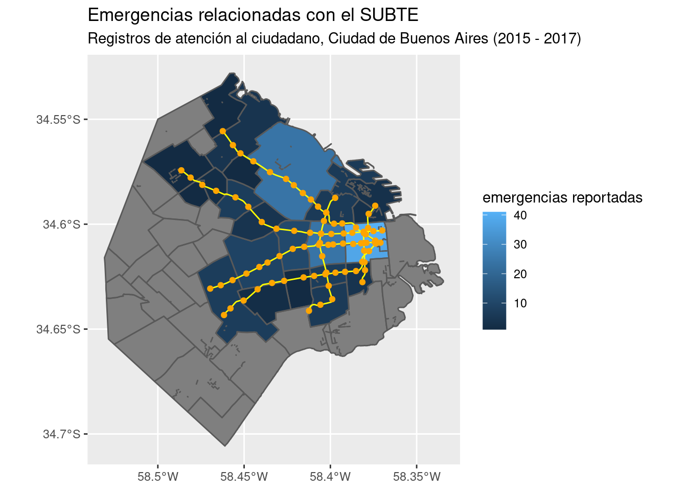

Comentamos al principio de capítulo que los archivos con datos espaciales pueden representar áreas (polígonos), líneas o puntos. Hasta ahora hemos hecho mapas con polígonos, pero según el caso podríamos querer mostrar otros tipos de geometría.
Un ámbito donde es común utilizar toda la variedad de geometrías es el transporte: Polígonos para representar distritos, líneas para el recorrido de un sistema de transporte, y puntos para la ubicación de las estaciones.
Una vez más, el portal de datos abiertos de la Ciudad de Buenos Aires nos provee los datos necesarios para practicar. De allí he descargado, y preparado para su uso, datos espaciales con
las líneas de transporte subterráneo (SUBTE) de la ciudad## Reading layer `subte_lineas' from data source `http://bitsandbricks.github.io/data/subte_lineas.geojson' using driver `GeoJSON'
## Simple feature collection with 80 features and 2 fields
## geometry type: MULTILINESTRING
## dimension: XY
## bbox: xmin: -58.48639 ymin: -34.64331 xmax: -58.36993 ymax: -34.55564
## geographic CRS: WGS 84y los puntos con las ubicaciones de las estaciones de SUBTE## Reading layer `subte_estaciones' from data source `http://bitsandbricks.github.io/data/subte_estaciones.geojson' using driver `GeoJSON'
## Simple feature collection with 86 features and 3 fields
## geometry type: POINT
## dimension: XY
## bbox: xmin: -58.48639 ymin: -34.64331 xmax: -58.36993 ymax: -34.55564
## geographic CRS: WGS 84Combinar capas mostrado distintas geometrías es simple usando sf() y ggplot(). Sólo es cuestión de sumar capas de geom_sf() con cada fuente de datos:
ggplot() +
geom_sf(data = barrios_geo) +
geom_sf(data = subte_lineas, color = "yellow") +
geom_sf(data = subte_estaciones, color = "orange") +
labs(title = "Sistema de transporte subterráneo (SUBTE)",
subtitle = "Ciudad de Buenos Aires")
¡Voilà! Podríamos también aprovechar el lienzo en blanco de la superficie de los barrios para hacer un mapa temático que muestre la cantidad de incidentes en la base de atención ciudadana relacionados con el SUBTE.
Para revisar todos los rubros de atención, podemos usar summary(atencion_ciudadano$RUBRO); en lugar de pedir un resumen del dataframe completo, le estamos indicando a R que nos interesa el detalle de la columna “RUBRO”. Entre las 346 categorías, una es “EMERGENCIAS EN SUBTE”. Suena interesante.
¿Dónde se han registrado más incidentes con emergencias? Lo responderemos con un mapa. A priori asumimos que no vamos a encontrar casos en en los barrios por donde no pasa el SUBTE, lo cual también podremos comprobar.
Primero creamos un subconjunto de los datos con la suma, por barrio, de emergencias reportadas
emergencias_en_subte <- atencion_ciudadano %>%
filter(RUBRO == "EMERGENCIAS EN SUBTE") %>%
group_by(BARRIO) %>%
summarise(emergencias = sum(total))… luego lo cruzamos con nuestro archivo geográfico
## Joining, by = "BARRIO"… y creamos un mapa temático mostrando la suma de emergencias por barrio:
ggplot() +
geom_sf(data = barrios_geo, aes(fill = emergencias)) +
geom_sf(data = subte_lineas, color = "yellow") +
geom_sf(data = subte_estaciones, color = "orange") +
labs(title = "Emergencias relacionadas con el SUBTE",
subtitle = "Registros de atención al ciudadano, Ciudad de Buenos Aires (2015 - 2017)",
fill = "emergencias reportadas")
Aquí se cumplen las expectativas: la cantidad de emergencias reportadas sigue en forma clara un patrón relacionado con la cantidad de estaciones ubicadas en cada barrio. Y como era de esperarse, en barrios donde el SUBTE no ofrece cobertura la cantidad de emergencias es nula.